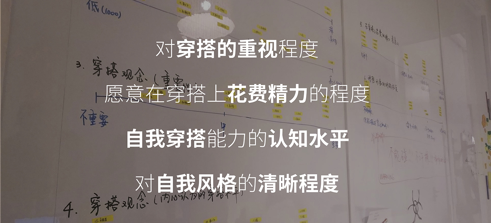
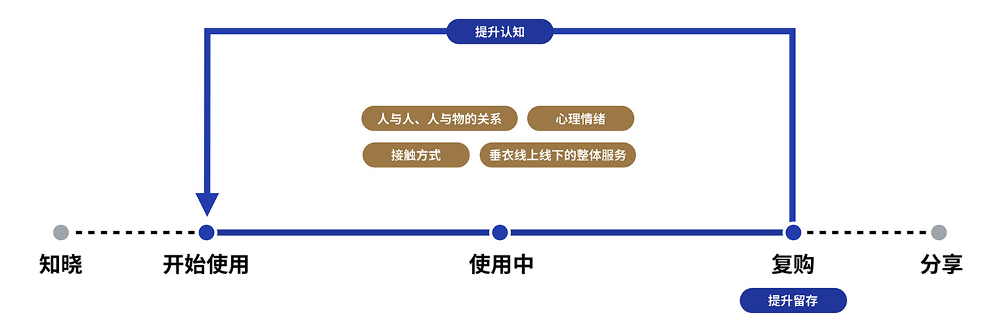
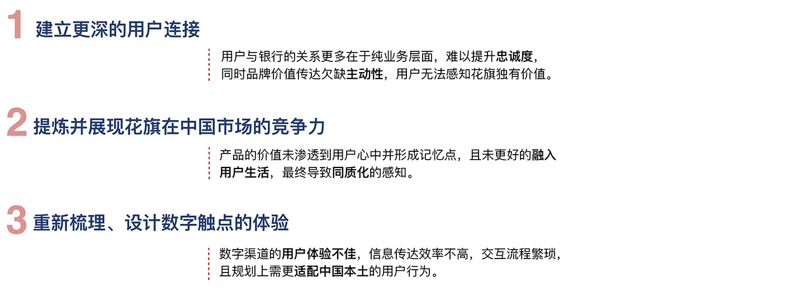
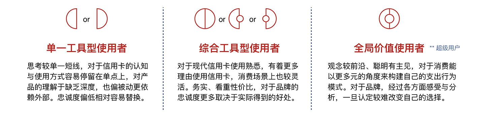
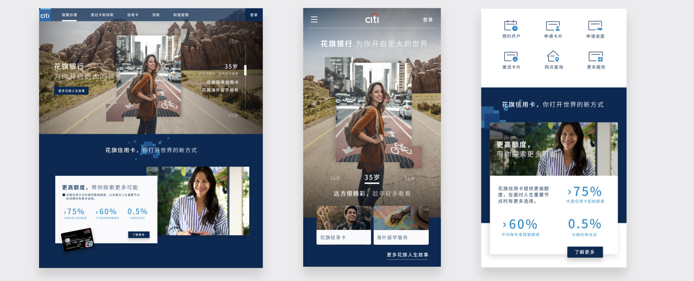

我从2010年开始了在同济大学软件工程系的学习，很快我意识到相对于技术本身，我更热衷于把技术带给人们的生活。2013年我开始了在Sony China Creative Center的实习。在以设计闻名的顶尖电子产品公司的实习是我的设计事业中很重要的一段经历。在2014年夏天，我来到伍斯特理工学院的Interactive Media & Game Development项目进行硕士课程的学习。在这两年里，我系统的学习了设计方法论，了解了如何从零开始去为目标思考和设计，接触到了很多业界最新的研究成果，也参与了很多有趣的项目。
2016年秋天，我加入学霸君，成为一名用户体验设计师。除了将之前的理论和经验更熟练的应用在经手的项目上之外，我开始站在更高的地方去看UXD这件事情。从初期的“交互设计”开始，慢慢开始扩大自己设计的边界，到后期负责团队的研究和体验设计，关注整个产品在生命周期所有触点的角色和体验。在这一年半里，我慢慢想清楚了一个体验设计师的核心价值在哪里，以及怎么为公司和用户带来更大的价值。

在ARK DESIGN这一年半也是我思考最多，输出最多，成长最多的一段时间，我开始逐渐像一位成熟的设计师去思考，规划，合作，应变和妥协。首先从“设计”到“设计咨询”，要求我的思考和方法更系统严谨，才能达成设计的目标，以及获得多方的认可。其次，更多类型的项目，要求我能够快速的学习，同时将设计方法论打磨得更加成熟和灵活。最后，当开始为项目负责时，我也逐渐开始用设计去影响团队中更多的人。项目总会结束，日臻成熟的经验和方法会成为设计师最重要的资产
我渴望一个更高的平台和强大的团队，我相信我的能力和经验以及对设计的热情会让我在这里爆发出更大的能量，在为更多人带来正面影响的同时，继续成长为一个更强大的设计师，点击 这里 下载我的简历，我期望能尽快收到你的回音!
To my lassie Anny, you are the reason for everything!
基于用户分群，规划产品的形态和成长路径
「垂衣」是一家主打男性市场的订阅制购衣电商。根据用户的特点和需求，由专业的“理型师”团队帮助进行服饰的挑选和搭配，每个季度为用户寄出一个“盒子”，用户收到盒子后留下自己喜欢的商品并付款，寄回不喜欢的商品。
2018年4月到6月，我们帮助垂衣团队
1、梳理了用户群体的归类情况，明确了核心用户的特征
2、分析设计机会点，定义了产品成长路径和产品架构
3、对当前的核心流程的用户体验进行了再设计
*
本次用户研究的两大目的
1、根据垂衣的业务现状，定位未来发力的核心用户群体，并梳理他们的核心诉求和行为特征
2、深挖用户对垂衣的使用情况，定位当前的设计问题，提供更友好的用户旅程
在定义用户时，我们从用户的生活状态出发，预设了多个维度，并将这些维度都融合到用户研究大纲中。在DEFINE阶段，我们将通过对数据的整合，发现影响用户分群的核心维度。而关于用户使用情况的数据，会更多的影响到当前问题的定义和之后的设计阶段
- 在分析研究数据后，我们发现对用户分类有如下四大决定性的描绘维度：
- 我们根据用户行为/认知，将每个用户定位到这四大维度上，根据用户的分布情况，我们对垂衣的用户进行了分群
不愿花费精力，被动提升形象
穿搭能力弱但是力求改变
B1：渴望形象蜕变
B2：想要形象升级
有明确的自我风格，却未被满足
泛，没有明显特征
- 进行用户分群后，我们根据用户群体的数量，特征和垂衣的服务方向划分核心用户群
正在使用垂衣的过程中，A，B类用户的穿搭水平和自我风格的清晰程度会逐渐提高，从而向C类用户转变。在今后的迭代中，垂衣可以通过提供更专业的理型服务和拓展商品的丰富度，将C类人群也转化成核心用户
- 在定义了核心用户群体后，我们基于划分群体的四个重要维度，结合他们所处的环境，进行了核心用户的特征分析
- 根据用户特征，我们制作了A，B1，B2三类核心用户的用户画像
- 最后，我们分析出了核心用户的痛点和目标，作为下一阶段设计的指导
*
- 将机会点的研究聚焦在体验部分，有利于接下来整体服务流程的机会探索
完整的服务体验旅程考虑用户使用产品前的状态与完成后一系列可延伸的动作和机会，而这一系列分享等延伸动作，根据对垂衣用户的特征分析，我们认为最重要的仍取决于使用过程的满意度因此，我们从使用过程中分析出了五大观点（Insight）及对应的机会点（Opportunity）
消费对象
用户与理型师，消费商品的关系疏远
KEY FINDING
- 用户对「直接沟通」需求渴望度极高
- 理型师与用户之间相互不了解，缺乏信任感
- 用户对自己陌生的品牌信任度低
期待/幸福感的提升空间
用户得不到提升后的满足感，对垂衣的好感度中庸
KEY FINDING
- 对垂衣的好感度过于中庸，处于“不好不坏”的中间地带
- 用户感受不到产品、服务为自己带来的改变
- 用户对产品、服务期待小惊喜
交流/交互形式路径
与用户交流形式笨重，交互流程不透明
KEY FINDING
- 获取使用反馈的形式不人性化，导致获取评价的质与量不稳定
- 初次了解用户的形式笨重，有效沟通的人力成本高
- 用户明白反馈的重要性，但效果因人而异，耐心做评价需要牺牲体验中的好心情
核心优势落差
核心优势不稳定，重要优点未凸显
KEY FINDING
- 初次了解时重要信息展示不全面，使用过程中才体会到
- 用户感受不到服务的专业度
- 理型师门槛低，水平参差不齐
服务模式落差
缺失实质性的专属服务，没有其他能吸引感染用户的地方
KEY FINDING
- 大部分用户因为主动/被动需要提升形象而来，为专属服务而来
- 渴望稳定的专属搭档
- 缺少专属服务
- 希望感受到更多关于商品本身的感受与风格
- 根据每个Insight，探索相应的机会点，发散出初步的ideas
消费对象的关系
加深用户对消费对象的了解，提升信任感
DRAFT IDEAS
- 推荐匹配度最高的三位理型师，可查看推荐理型师的简介，用户在体验之初就可以自主选择，有利于初步建立良好信任基础
- 理型师拥有专属页面，过往搭配的优秀案例/履历，直观展示团队的力量
- 在业务方无法为每个用户匹配单一理型师时，创造一个复合形象（服务组合）= 几位理型师 + 客服 与用户进行沟通
期待/幸福感的提升空间
让用户看见变化，梳理垂衣式惊喜的规则，增加期待值提升黏性
DRAFT IDEAS
- 奖励升级机制：连续要盒子N次可以提升等级并免费获得一个属于你的限量盒子
- 推出限时主题盒子，用户可以提前知道盒子主题
- 建立用户端的用户档案，档案根据每次使用情况更新
交流/交互形式路径
预留更多的可交流触点，转变交流形式，更轻盈更及时
DRAFT IDEAS
- 对话式的交互体验，让操作引导更自然
- 梳理当前复杂评价系统的信息层级，优先收集最重要的反馈，表现出并不是所有内容都要求评价，让体验更轻盈
- 评价中增设拍照反馈的形式，理型师直观看到真实反馈
- 将用户的反馈直接应用于搭配盒子的环节，并且让用户看见，让用户与盒子产生更强的联结
- 可视化的盒子轨迹，盒子正向你一步步靠近

核心优势落差
重振核心竞争力，准确有力的传达优势
DRAFT IDEAS
- 将专业术语转化成用户可以理解的语言，凸显另一种专业
- 在服务的第一个环节就清晰的传达重点优势
- 记录理型师为你工作过的时间，服务可被量化，让用户更真实的感受服务
服务模式落差
优化专属感，在服务中纳入更多个性化的元素，营造感染力，拥有更多的用户记忆点
DRAFT IDEAS
- 搭配案例场景化
- 根据用户的消费情况建立用户的“时尚脉络”，让用户看到自己的风格和时尚成长录
总结
通过针对机会方向的探索，尝试使垂衣核心水平更稳定，商品价值得到认可，相互交流的接触点更多，服务方式更丰富
达到用户能够明确感知到专属的体验，期待值随着使用时长推移而递增
*
思考框架
在思考概念的时候，我们从研究阶段总结出的机会点和ideas出发，想要实现上述的设计目标，我们的想法是：要把「想要买衣服了才打开垂衣」这样一月一次甚至一季一次的低频行为，转变为日常行为，有了和用户更频繁的接触，才能有「加深了解」「改变印象」「成为习惯」「建立情感连接」的后续可能
因此，我们提报的概念以Engagement为基础，将垂衣打造出用户的日常穿搭助手
概念设计（部分）
*由于保密原因，这里只展示设计中的部分成果

*由于保密原因，概念设计中剩下的流程以及详细设计，我们见面再聊:)
为JORDAN的尖货售卖设计发布机制，为平台吸引用户，并培养用户粘性
JORDAN TMALL是NIKE AIR JORDAN在中国最重要的销售渠道，但是在用户心目中，天猫渠道更偏功能，仅作为售卖工具。与此同时在发售尖货时（比如稀缺的复刻球鞋等），由于之前采用天猫的售卖机制（到点抢购），导致几乎所有的库存都会被黄牛BOT抢走，久而久之用户不在相信“可以在天猫店买到尖货球鞋”，以至于逐渐放弃了天猫平台
目标分析
当用户只是点击购买按钮，却没买到，就会责怪JORDAN没有给他足够的机会，将所有负面情绪指向销售方。
因此我们建议，通过游戏化的方式，基于用户的行为，产生随机有输赢的结果，让失败的原因让用户自己承担，从而分散负面情绪
在本次设计中，我们重新规划了发售策略，目标是
通过游戏化的发售方式和有奖励的传播裂变，吸引更多消费者参加的同时，提高机器人抢购门槛，让更多消费者买到LAUNCH的产品。
在这个项目中，为了确保这个高度定制的模块在天猫平台上的落地性，涉及到了与业务方，平台方（天猫），开发方的紧密沟通与协作。
*
参与“抢鞋”的用户心理和行为都非常单纯：只要能抢到鞋就行。因此在这个项目中我们没有研究用户分群以及每一类用户的需求和行为模式。我们将重点放在了用户在JORDAN TMALL上的痛点和市面上的各种发售机制上。我们通过桌面研究的方式系统的分析了市面上各类常见的限量发售方式，希望能够从中发现可供使用的设计机会点。
基于用户旅程的痛点分析
在完成桌面研究后，我们根据旅程中每个触点上用户的痛点以及对当前市面上主要玩法的分析，提出了JORDAN新的发售体验路径假设
*
三种发售机制
在进行具体设计之前，我们分析了JORDAN售卖商品的不同性质，认为每一种性质的商品承载的销售目的都略有不同，因此规划了3种不同的发售机制：抽签制，突袭制，常规制
- 抽签制：适合远超市场价，库存量较少的热门商品发售
- 突袭制：适合库存量极少的商品发售
- 常规制：适合热度相对较低，库存相对充沛的货品
为保证体验的一致性，让用户在三种机制下不至于迷失，我们统一了三种发售方式的整体逻辑路径，只是在各个触点上的具体玩法有所不同
下面以抽签制为例，展示我们细化设计的过程
抽签制的设计目标
- 通过轻量任务达成有效传播并使更多用户参与其中
- 靠自己的参与，赢得更大的中签率
- 提高机器人抢购门槛的同时，让失败的原因由用户自己承担，分散负面情绪
在进行具体IDEA发散之前，我们梳理出了抽签制的详细用户旅程，将根据用户旅程上的各个节点来提出IDEA
抽签制发售的用户路径
在对提出的ideas进行了分析筛选后，我们将其落在了具体设计中，提出了抽签制详细的交互流程
抽签制发售流程
获取抽签码的规则
抽签制发售的交互设计（部分）
抽签活动主页交互
邀请好友流程交互
邀请好友流程交互
异常流 - 中途退出会员导致不能购买
*由于保密原因，这里只展示设计中的部分成果。其余两种发售机制的设计以及更多详细设计我们见面再聊:)
思考产品的本质&复杂系统的用户体验设计
阅卷系统并不是一件新鲜的事情，甚至在10年前，阅卷系统就已经在很多学校开始投入使用了。在17年年初的时候，我们也开发了一套网上阅卷的系统，在年底，我们决定重启这个项目。这样的决定主要是基于商业的考量，当然也迫使我们去重新思考阅卷系统，去挖掘它的本质——我们要做出一款怎样的产品，才会为用户和企业都带来价值
*
在开始再设计这套系统之前，我们问了两个问题：用户想要什么，我们想要什么。
在思考第一个问题的时候，我们发现两种阅卷系统的差别远不只是流程和交互上的差别，它们满足的是两种完全不同的需求：网阅系统的首要满足的是公平性，保密性，应用在非正式的大考中时，还可以解决空间的问题——批改可以在任何地点任何终端上进行。随之而来的代价就是，网阅是一个涉及角色众多，流程繁杂的事情。手阅满足的是效率性，并且尽可能不改变角色线下习惯。
那么，针对两种迥然不同的需求，我们应该去切哪一个场景呢？在我看来，我们的整个产品链，无论是已经进入常态化使用的作业和小测试，还是即将要做的考试服务系统，本质上能为系统带来的最大的价值是数据——我们需要更多的学生行为数据来帮助系统的成长，以提供给用户更大的价值。所有的系统都是手段，而目的是更高频的用户的使用。想到这里，我们的答案就很清晰了：相对于每学期只进行1-2次的大考，几乎每周都会进行的小考才是我们需要去关注的场景，而能够切入这个场景的系统，只能是手阅的系统。
1. 用户研究和竞品分析
在开始设计系统之前，我们先思考了一个问题：我们要给用户带来怎样的价值，才能让他们常态化的使用产品。我们首先梳理了手阅系统的框架，发现所有的手阅系统，都由这五个流程构成
在有了最基本的产品框架后，我们带着这个框架进行了一次竞品分析，目的是搞清楚市面上的其他玩家是怎么思考产品的。在分析了几乎所有的主要竞品之后，我们发现，每家厂商在技术和流程上都有自己的亮点，但是几乎所有的厂商都将着力点放在了两个地方：降低制作答题卡的成本，提高批改的效率
但是，这真的是用户会为之买单的点吗？带着这个问题，我们进行了一次定性的用户研究。得出的结论是，在平常的小考里面，老师的确是注重效率的，然而令人沮丧的一点是，无论系统的流程如何优化，在OCR和NLP技术成熟之前，相对于纯线下流程，阅卷系统一定是会带来额外复杂度的。在我看来，提高效率这件事情是一个伪命题。那么问题来了：我们应该怎样去挖掘系统的价值呢？
2. 阅卷系统的trade-off，我们要做一款怎样的阅卷系统
似乎在整个流程里，就只剩下考后的这一环了。令人欣喜的是，在我们的用户研究中，老师们都提到了一件事情：小考是老师了解学生学习情况的重要手段，而统计分数和分析试卷是一件耗时费力的事情。在这个时候我们意识到，阅卷本身不是目的，如果把思维局限在阅卷系统里就很容易走进死胡同，把系统想成考试服务，去思考考试的目的，结论就很清晰了——我们的重点应该在考后——数据的整合和利用。
其实阅卷系统就是一个trade off，我们一方面尽量减小用户的成本，将流程简化到极致，一方面增加用户的收益。当用户意识到自己使用系统的收益明显大于成本的时候，我们的产品逻辑就成立了。

阅卷系统的trade-off
*
根据我们大量的用户研究（包括人口统计学的研究和30位老师以上的深度访谈），我们发现用户在阅卷方面的动机，目标和行为模式是相当一致的，我们根据下面的研究分析结果制作了重要角色的用户画像：
动机和目标：李铁马老师是红旗中学高二年级的物理学科组长。自己还有3个班级的教学任务，李老师希望能通过考试的手段来帮助自己了解学生近期的学习状况。他不需要每次考试都像期末开始一样正规，但是他认为考试的形式对学生在压力下答题的能力是有帮助的。每次考试之后他需要知道3个班级的总体状况，每个班级的状况和每个学生的情况。
行为模式：李老师想要在礼拜一晚自习在自己的某一个班进行一场1个小时的小测试，他在礼拜天的时候准备好了题目，试卷是2页A4的word文档，之后又根据题目用word制作了答题卡，制作答题卡用了他30分钟。礼拜一上午他在办公室打印了50份试卷，考试完成后，他用礼拜二一上午的时间批改完了所有试卷。他又花了2个小时将每张试卷的分数统计好，并在当天晚上将学生的分数录入到自己的excel表格中，当他基本上分析好学生的数据时，这一天已经结束了

阅卷系统的一个用户画像
“当系统优化到一定程度的时候，其复杂度就不能再被降低，而只能被转移掉”
我们设计的思路就是，把每一个步骤的复杂度都尽量从教师这个角色上转移掉，转移到可以接受复杂度的角色，或者系统上去。并且，我们需要保证这个流程可以由“教师”这一个角色独立完成。
在“组卷”，“制作答题卡”，“考试”，“批改”，“统计分析”这几个步骤中，“组卷”，“考试”，这两个流程是纯线下流程，和系统无关。在“制卡”流程中，我们将教师的复杂度转移给了系统中的录入人员，由系统来分析试卷，结构化试题并生成答题卡。教师只需要上传word试卷，并对生成的答题卡进行微调就可以了。在批改流程中，我们考虑过两种方案：一是让老师使用特殊设备进行批改，批改的过程中批改数据就一边进入系统了；二是批改完成后扫描。在后来的评估中，我们发现第一种方案会为用户带来太多的额外规则，增加的复杂度太大，因此我们还是选择了批完扫描的方案。我们希望通过对扫描流程的优化，能够让老师在2分钟内完成一个班级试卷的扫描。在试卷扫描完成后，我们把统计和分析的复杂度也转移给了我们的系统和教研老师，也就是说，老师扫描完试卷后，就可以直接拿到考试质量分析报告了。

阅卷系统的体验地图
根据我们的体验地图，我们梳理了大致的流程，画出了教学老师——也就是我们系统的核心角色的User Flow：原有的网阅流程会涉及到10个主要节点以及3个角色，在这样的一个流程中会出现很大的沟通成本及异常情况的处理。在新的手阅流程中，我们只需要一个角色处理所有的六个步骤，并且我们把最复杂的操作步骤全部转移到了系统上，这样我们的用户流程就变得更短更流畅了。

阅卷系统的主要用户流程
阅卷系统是一个典型的步骤性的系统，涉及到数据在系统中的处理和流转。在开始具体的页面设计之前，我们需要梳理出数据到底是如何在系统与角色之间流转的，每个角色需要对数据做怎样的处理，每一步的输入和输出是什么。我们制作了涉及到系统内所有角色的泳道图
泳道图：阅卷系统主流程的数据流转逻辑
部分交互文档
交互稿：考试管理模块的结构和流程
交互稿：试卷上传模块的结构和流程
交互稿：考试管理列表页的交互及标注
交互稿：生成答题纸的交互及标注
部分视觉文档

视觉稿：阅卷系统的栅格系统

视觉稿：考试分析报告的视觉稿
游戏和故事，另一种用户体验设计

grand prize
“May’s Journey”是一款帮助10-14岁的前青少年女性（pre-teen girls）学习编程的严肃游戏。在这款游戏里，玩家需要帮助游戏角色May寻找她的朋友，并修复破碎的游戏世界。May’s Journey是一款3D的解密游戏，玩家需要通过编写代码来破解谜题
*May's Journey获得了2017年MassDigi游戏设计挑战赛大奖
*May's Journey是由我和我的同学Chaima Jemmali作为毕业设计项目共同完成的。我负责用户研究，游戏设计，艺术开发，用户体验设计。Chaima负责游戏设计和游戏开发。在毕业答辩时，我们完成了游戏的第一版。在毕业后，Chaima还在继续这款游戏的迭代工作。在本作品集里，只强调了第一版里我所做的工作。你可以 点击这里 阅读本项目的论文
*
在立项之后，我们只有一条很简单的需求描述：“为10-14岁的前青少年女性设计一款帮助她们学习编程的游戏”。在开始一切设计工作之前，我们对这个完全陌生的用户群体进行了一次研究，试图弄清一个问题——我们需要设计一款怎样的游戏。在这次研究中，我们选择了专家访谈以及相关文献的阅读。事实上，所有的专家和文献都给出了相似的结论：我们的目标用户在游戏选择上是有很明显的偏好的：
神秘的环境，弱化的积分，没有时间限制
声效和游戏气氛是很重要的因素
喜欢解密类的游戏胜过操作性的游戏
没有强烈的竞争机制，也不会有频繁的死亡和复活
看重玩家和角色的关系
没有陡峭的学习曲线
在回答了载体的问题之后，我们的第二个问题是：用什么方法去教我们的目标用户呢？在试图回答这个问题时，我们依然采用了专家访谈的方法，许多研究者似乎认为，问题不在于学习单个语言结构的语法或语义，而是要掌握如何将结构与有意义的程序相结合的过程。他们认为，在学习一种特定的编程语言之前，学习编程逻辑和理解所有编程语言中相似的算法和代码设计思想会是一件更有价值和更高效的事情。
与此同时，我们开始了竞品分析，在所有我们可以找到的类似游戏里，大家的教学方法大致有两种：一是让用户写一种真实的编程语言，二是讲语言完全抽象成图形指令，用户通过与图形界面交互来完成对对象的操作。而我们认为，在对于初学者来说过重的编程语言，以及对编程语言没有任何认识的基于图形界面的方法之间，需要有一个桥梁来填补这个空白，来完成编程概念和实际编码之间的转换。因此，我们选择了讲两者结合起来的方式：

我们选择了将编程概念和真实编程语言结合起来的教学方法
*
根据研究的结果，我们确定了这款游戏的机制：一款3D的解密游戏，玩家需要通过编写代码来破解谜题。我们选择这样一种游戏类型是因为：探索游戏通常允许创造与多个游戏人物和NPC的丰富的故事，更方便玩家和角色建立情感的联系；并且，我们选择将编程和解谜关联起来，因为这对我们的目标受众更有吸引力。
大体上，玩家在玩这款游戏的时候，会频繁的经历两个阶段
1.一个有自上而下视角的的探索阶段，玩家操作游戏角色一起走动，并与游戏中的其他物体和角色互动
2. 玩家解决谜题的编码阶段，在这个阶段里，玩家编写的代码将帮助他们在整个游戏中前进。 编程问题将与故事有关，玩家需要在在探索阶段找到相关的提示来帮助他们通关
事实上，写故事并不是我们的额专长。最后在一名教授的建议下，我们的故事采用了“英雄之旅”（Hero’s Journey）的叙事模式。这个模式出现在很多戏剧，讲故事，神话，宗教仪式和心理发展里。 它描述了一个典型的被称为“英雄”的原型的冒险旅程，这个冒险者代表可以个人，团体，部落或文明，去实现伟大的事业。
“英雄之旅”（Hero’s Journey）的几个阶段
我们的故事开始于一个女孩May，她发现自己在一个破碎的游戏世界里。 在这个世界里，许多路径都被封锁了，她需要需要操作游戏世界里的物体才能够打通这些道路。 起初，她会遇到一个祭司（Oracle），告诉她这个世界上发生了什么事情，它是如何被打破的，以及如何找到她的朋友“Juno”，并且在一切都太晚之前逃离这个游戏世界。 一路上，她会找到跟随她的其他角色。也会有一些其他的游戏角色会帮助她或向她求助。
当她终于在游戏的中途找到Juno时，他们都意识到，他们不能自己逃脱，而放任这个游戏世界崩塌，让游戏里的人物去面对一个可怕的命运。 因此，他们决定在其他角色的帮助下修复游戏世界并保存下所有的游戏角色。
在有了故事框架之后，我们就开始着手设计我们的关卡。在第一个大迭代周期里（2015.08 - 2016.05），我们计划设计故事所需要的一半关卡（15个关卡，一直到May找到她的朋友Juno）并开发其中的6个。在完成前期调研，确定游戏机制和故事，并拿到用户研究许可之后，我们还剩6个月的设计开发时间。负责技术的同学用了1个月的时间完成了我们使用的伪代码的编译器，与此同时我们先设计了一些粗略的关卡模型。此时，我们用纸质模型进行了一些相当发散的概念测试，在这一期的测试里，我们需要保证用户可以理解我们的关卡设计。在进行了3次的可用性测试之后，我们基本上知道了应该怎样去规划我们的关卡。
为了使学习曲线更加温和，我们游戏中的每个关卡都被分成几组子关卡。 每一组关卡会教授给用户一个新的知识点，并且用重复和变体来帮助用户巩固这个知识点。 随着游戏的发展，编程问题和解密都会越来越复杂。

关卡2风中花园的纸面原型
在每次进入开发之前，我们都会用这些纸质原型来进行关于难度和可玩性的可用性测试，我们需要保证1. 我们的关卡有足够好的转化率：用户能通过关卡来达成我们制定的学习目标 2. 用户既不会因为关卡难度过低而感到无趣，也不会因为难度过高而感到挫败。一旦确定了转化方式和难度，我们就在Unity中建立一个低保真的2D游戏原型用于更大规模的可用性测试，这些测试组里包括WPI的没有编程经验的学生以及附近一所中学的一个班级。在此类的用户研究里，由于没有足够的成本来进行埋点和点击研究，我们采用了远程的可用性测试：我们发送给被试者一个可下载的PC版本和一个共享的Google doc，问题包括他们是否已经完成了这个关卡，他们需要多长时间才能完成，是否可以轻松弄清楚这些机制，他们怎么看待这个难度曲线，有没有特别喜欢/不喜欢任何子关卡。 最后，我们对用户的总体感受和建议提出了一个开放式的问题。
根据我们的研究，我们的目标用户对图形风格有着独特的偏好。 一般来说，与男孩相比，女孩更喜欢温柔，优美，宁静和不那么激进的插画风格，以及高亮度，温暖和适度的饱和度配色方案。此外，我们研究了一些得到了女性玩家的高度评价的游戏，插画，以及根据我们对女性喜好的研究进行了视觉设计。 我们选择了Alto's Adventure，Jona Dinges的插图和Monument Valley作为参考。
为了达到这种效果，我们尝试了多种图形风格来呈现我们的游戏。 经过多次尝试，我们发现当时流行的低多边形风格（Low Poly）是一种适合我们游戏的风格。 首先，这是一个很好的方式来展示灯光和阴影——以达到一个优雅的氛围。 其次，大多数的低多边形风格艺术是极简主义的，这也正是我们所追求的效果。
low poly风格概念设计
下图显示了我们在进行艺术设计时3个迭代的版本。 在我们有了版本1之后，我们对这个设计进行了一次专家评审，反馈是它太简单了，并且看上去太像Monument Valley了。 玩家想看更多的细节，因此我们增加了更多的细节来描绘一个崩溃的游戏世界。 完成了第二个版本后，我们再次将其发送给专家进行评审。 结果是这个版本在视觉上比前一个版本更好，但是他们觉得这个设计不符合城堡的设定（我们前一半的故事发生在一座城堡里），而更像是一个沙漠设定。 我们做了一些关于游戏如何形成室内空间认知的研究。 基于此，我们添加了支柱，墙壁和黑暗的背景。 然后，我们敲定了我们的游戏艺术的最终版本。

关卡1艺术设计的三次迭代
下面是我们设计的一些游戏关卡的视觉稿：

May's Journey 第零关：回廊
Crystal Hallway被设计成一个黑暗而长长的走廊，玩家首次会见先知。 这是玩家开始游戏后的第一幕场景。 由于这是一个具有“魔力”的游戏世界，我们试图在玩家第一眼看到这个游戏时给玩家提供一个神秘的体验，并且在之后的关卡里再去层层拨开这个游戏世界。我们给第一关的定调是黑暗的。 在这个关卡里，光照效果会让用户的视线聚焦在中部的道路上，而不会因为其他的内容分心。

May's Journey 第二关: 花园
Windy Garden是这座城堡的花园。 在这个关卡里，我们试图建立一些不同的东西。 第一个原因是我们需要确保玩家不会因为很多相似的的室内场景而感到厌倦，我们希望建立一个多元化的游戏世界。 这是一个室外的关卡，充足的自然元素，如树木，岩石和水。 我们使用高亮度的色彩设计，使这个关卡足够优雅和令人愉快。
May's Journey 第三关: 廊桥
The Lounge Bridge是一个玩家再次进入室内场景的关卡。 由于这个关卡的谜题和场景比之前的都更复杂，我们决定不要让视觉过于分散。 我们没有把这些大厅打破，相反，我们建立了一个整洁清晰的空间，让用户把重点放在解决难题上
在我们的游戏用户界面设计中，玩家在每个关卡的开始都会有一个45度的自上而下的视图。 一旦玩家进入编码模式，角度将自动切换到90度自上而下的角度，使玩家能够在操纵物体的同时看到整个地图（当然，玩家可以切换回正常的视角）。在编码模式下，屏幕右侧有一个编码石板和一个控制台石板。 玩家可以在编码石板上编写代码，并在控制台石板上读取信息（如错误）。 例如，如果玩家发生语法错误，他们将能够识别错误并找到发生的位置。 我们使用这个UI布局的原因是这个编码控制台结构被应用在大多数编码软件中。 我们的意图是，当我们的目标用户将来会切换到真正的编码环境时，他们会对布局感到熟悉。
屏幕底部是信息栏，我们在这里为玩家提供游戏元素的可供性（affordance）当玩家将光标悬停在可操作的对象上时，相应的信息和提示将会显示在这个栏中，让玩家很容易找出他们可以操作的对象以及可以对这些对象做些什么。 我们希望玩家把注意力集中在解决难题和编写代码上，而不是花太多的时间去搞清楚该做什么。

May's Journey 游戏UI设计
*
在设计这款游戏前，我们有两个目标：第一自然是教会我们的用户一些基本的编程概念，第二是改变她们关于“编程是一件很困难的事情”的刻板印象。
对于第一个目标，我们设计了这样的方案来研究用户的转化率：在整个游戏的设计过程中，我们都和前文提到的那个班级保持了密切的联系。在第一次进行入校调研的时候，我们根据我们的教学目标拟定了一份关于编程的测试，在这个班级进行了考试。在设计周期结束后，我们又邀请同一批学生在90分钟内试玩了所有发布的关卡，试完后让他们完成了同样难度的一份试卷。下图是两次测试的成绩对比：
项目前后学生编程能力对比
从结果来看，我们“教会我们的用户一些基本的编程概念”的设计目标是完成得比较成功的。
对于第二个目标，我们依然是运用了相似的研究手法：在项目开始时和项目结束时发放了关于“编程是否是一件困难的事情”，“编程是否是一件重要的事情”，“编程是否是一件枯燥的事情”的1-5度量的量表。结果表明认为编程困难的人数大幅减少，认为编程重要的人略有上升。有趣的是，认为编程枯燥的学生数目也出现了上升。
项目前后学生对编程态度的对比
基于研究和业务具体情况，设计更友好的用户旅程，并给出可执行的设计规范
在我们和NIKE的合作中，我们发现NIKE天猫店在与用户的各个触点的旅程上都存在诸多问题。因此我们提出了对天猫店最重要的两个触点——店铺首页和商品详情页（PDP：Product Detail Page）进行了再设计，在提供更友好的用户旅程帮助用户更好的购买时，给出可执行的设计规范，让后续的落地有系统性的指导
在新版首页上线后，使用50%的UV进行了新旧两个版本的A/B testing（页面售卖的SKU相同），发现用户的用户的停留时间上升了17%，首页转化率（通过首页进行下单的用户比率）上升了88%
新版产品详情页（PDP）将于19年年底上线
研究总览
在NIKE以往定量研究中关于用户画像，用户分群，页面点击表现的基础上，我们重点研究了用户的购物习惯，对NIKE KIDS天猫店的认知，用户在店铺旅程中的行为和想法。挖掘用户在线上为小朋友购物时更详细的行为模式和决策过程，为改版做出更有针对性的设计
采用深度访谈的方式，我们访问了21位用户，主要的研究点在用户在线上为小朋友购物的习惯和NIKE YA店铺用户旅程分析两个方面
根据数据，在NIKE KIDS店铺中，婴童（0-3岁）和幼童（4-6岁）的商品占店铺70%的销售，而当前版本的设计很倾向于大童/成人化，我们希望在本次的改版中能做到各个年龄段的平衡。因此在前期调研中，我们着重了解了更多婴幼童家长的情况。
我们挑选了21位家长，其中有14位妈妈和7位爸爸，小朋友的年龄集中在1-6岁，其中有13个男孩，10个女孩
研究洞察和设计机会点
我们发现，无论是哪一个分群里的用户，用户在天猫店中的行为模式会分为如下图所示的三类。其中C类用户是首页的核心受众，因此本次的journey会根据用户的此类需求进行设计
在进行完用户访谈之后，我们以“用户的C类需求”为核心，总结出了首页的如下3个INSIGHTS
INSIGHT 1
卖点不准确，店面传达的信息导致了核心用户的流失
KEY FINDING
- NIKE KIDS首页传达的Selling Point太过偏向于大童，让多数家长觉得“可以逛的东西太少”
- NIKE KIDS店铺给家长留下了“NIKE主要还是在卖鞋”的印象，不利于其他类目商品的销售
INSIGHT 2
家长在购物的时机和找货的习惯上有很多相似点
KEY FINDING
- 婴儿的服装会根据生长过程频繁的买，儿童的购买会更有计划性。总的来说，换季是最重要的购买时机
- 年龄分类往往不是准确的参考，具体的尺码才能帮助家长精确的找货
- 即使家长接受跨性别的商品，也不会在跨性别的类目下选购
INSIGHT 3
在首页旅程中，用户无法快速将自身需求和商品匹配，导致首页转化率低下
KEY FINDING
- 家长在为小朋友选购时，即使没有明确的目标，也会有明确的要求
- 用户都是视觉动物，图片就是最好的决策依据：发现图片信息与自己小朋友情况不符或者信息缺失时，就不会点击
- 更真实的效果图会很好的帮助家长进行决策
根据以上INSIGHTS，我们提出了如下设计机会点，并发散出了相应可能的解法
OPPORTUNITY 1
注意婴童/幼童/大童元素在首页的平衡，加强APPAREL类商品在首页的传达。建立更准确的卖点
DRAFT IDEAS
- 首页将APPAREL做更多，更提前的露出，让用户感知到店铺商品的多元化
- 在NIKE品牌调性的基础上，更注意各个年龄段设计元素的平衡
OPPORTUNITY 2
贴合家长的逛店习惯设计首页，让用户产生“好逛”的认知
DRAFT IDEAS
- 贴合“换季”这一重要节点下用户的需求进行卖货
- 在首页呈现更多可逛的内容，并且用热门、搭配、主题等方式进行包装，让用户可以从多个角度了解好货
- 用年龄段帮助家长选择浏览的商品，同时用精确的尺码帮助家长精准选购
- 适当弱化性别的概念，可以让家长逛到更多的商品，产生更多购买机会

OPPORTUNITY 3
让露出的信息「更丰富」，「更直白」，「更高效」。让符合用户需求的货都能被看见
DRAFT IDEAS
- 在商品图上露出更多的信息：所有颜色，所有适合的年龄段、尺码，让用户更轻松的做购买觉得
- 将家长最注意的商品特点直接露出，让价值被看见，精确匹配用户的需求
- 提供更真实的上身效果、买家秀，为用户提供更有可信度的参考
*
根据研究结果，我们提出了改版的设计原则
1、设计向会逛首页的用户倾斜，为用户呈现更多可逛内容的同时让首页更好逛
2、让首页旅程更聚焦，、：家长看到的货和自己的小朋友有更强的相关性
3、注意货和用户需求的精确匹配，让用户快速找到符合自己要求的商品
在以上设计原则的基础上，我们提出了改版后的交互框架
BEFORE & AFTER
在进行NIKE KIDS产品详情页再设计之前，我们已经完成了NIKE大店的产品详情页再设计，在对KIDS店进行专家走查时，我们注意到两个店采用了同样的叙事结构。因此大店面临的问题同样会延续到KIDS店。我们在这样的情况下，制定了本次研究的策略：
第一步，就是对大店梳理出的insights和相应的opportunity进行分析，筛选出可以运用到KIDS店的研究结果
NIKE天猫旗舰店研究中可以延续到KIDS店的洞察和机会点
第二步，我们针对KIDS店进行了补充研究
NIKE KIDS店的用户分群复杂，很难采用“为核心用户分群的需求和行为模式而设计”的套路。转而，我们把研究策略定为“为绝大多数用户的共性而设计”，因此，我们采用了定量研究的方式，聚焦在用户在选购不同商品时的关注点和行为模式上。最终，我们成功回收了2100份问卷，进行分析后得到了以下insights。并且通过竞品分析和我们自己的发散，得到了相应的设计机会点
NIKE KIDS店的设研究洞察
INSIGHT 1
帮小朋友选择合适的尺码是家长在NIKE KIDS购物最大的痛点
KEY FINDING
- 为小朋友选择合适的尺码远不止是一个长度问题，鞋型，鞋宽，小朋友的成长速度都会是重要的考虑因素
- 家长在选码时往往会有自己的经验，这些经验并不适用于每个品牌，有时反而会导致选码不准
- 家长更喜欢通过身高，脚长等直观易得的数据来帮助选码
INSIGHT 2
家长在为小朋友选购时，会有明确的购物需求和关注点
KEY FINDING
- 在所有的购买参考信息中，"商品长什么样"和"商品有什么特征"是用户最关注的两个点
- 为了买到“合适”的商品，除了尺码之外，多数用户还会关注"鞋型"(84.3%)和"衣服的版型"(79.6%)
- 对于鞋类，"产品特点"是否符合自己的需求是做出购买决定的重要因素；对于服装，除了产品特点，"款式"和"设计"也得到了同等的关心
- 在购买鞋服时，家长希望看到"同系列"和"同价位"的推荐，以及穿搭的更多可能性
INSIGHT 3
即使是同类型的商品，在为不同年龄段小朋友选购时，家长的关注点也会有所不同
KEY FINDING
- 在为婴童(0-3岁)，幼童(4-6岁)选购时，"安全","舒适","穿脱方便"相关的特性最受关注，而"运动属性"和"上身效果"并不是核心关切
- 随着小朋友年龄增大(6岁+的大童)，"功能性"也成为了重要的考量因素，同时会有大量的用户(34%)会在KIDS店为自己选购，因此在售卖大童商品时要更多考虑成年人的偏好习惯
根据以上INSIGHTS，我们提出了针对NIKE KIDS店的补充设计机会点
OPPORTUNITY 1
贴合家长为小朋友选码时的多元需求，提供更有帮助的尺码模块
DRAFT IDEAS
- 除了"三围","胸宽","肩宽"等高门槛数据，页提供"身高体重"作为更直观的参考
- 清晰尺码表的使用规则，避免用户随便带人自己的选码经验
- 除了尺码表，提供更多选码辅助信息（EG：特殊脚形的选码建议）帮助家长购买
- 提前考虑了小朋友的成长进程，让家长买得更有信心

OPPORTUNITY 2
在叙述产品特点时，与家长的实际关注点和需求做更深刻的结合
DRAFT IDEAS
- 采用更高效的叙事手法，把商品特性和为小朋友带来的价值清晰的呈现出来
- 直白的告诉家长“什么样的商品对小朋友来说是好的”，让他们更接受商品的特性
OPPORTUNITY 3
根据家长为不同年龄段小朋友购买时不同的关注点，调整内容比重，进行差异化叙事
DRAFT IDEAS
- 在讲述婴幼童商品时，着重讲述产品特性
- 随着年龄段的增长，也需要强调样式和上身效果的内容比重
*
在充分考虑设计机会点的情况下，规划NIKE KIDS产品详情页的用户旅程
首先，我们根据用户的状态，面临的挑战和设计目标，梳理了设计思路
设计原则：梳理产品优势，同时尽量缩短购买的决策链路，让不同心智模型的用户都能尽快获取做出购买决定所需的信息
在以上用户旅程的基础上，我们提出了改版后的交互框架（以FOOTWEAR为例）
NIKE KIDS产品详情页MOCK-UP（以FOOTWEAR为例）
数字渠道定位和策略 公众号和官网再设计
*由于保密原因，这里只重点展示项目中的「研究」，「概念」阶段和小部分「概念设计」，「详细设计」的内容我们当面聊
花旗银行信用卡项目作为典型的传统企业数字化转型项目，在进行将业务数字化时，面临核心用户画像不清晰，数字渠道定位混乱的问题。因此，希望我们基于对花旗业务，品牌，优势的深度理解，基于核心用户的特点，重新规划花旗信用卡的数字渠道，将花旗的优势更好的传达给用户，提高用户的用户体验和活跃度。2018年7月到10月，我们进行了花旗银行数字渠道策略探索，以及信用卡公众号和官网的再设计。
本次项目分为三个阶段
1、研究阶段：结合市场趋势研究，竞品研究和用户研究，梳理用户特征，核心需求
2、概念设计阶段：花旗数字渠道的定位梳理，信用卡公众号和官网的概念设计
3、详细设计阶段：信用卡公众号和网站的详细设计
*
研究总体流程

1、花旗信用卡的初了解：通过关键决策人访谈了解花旗信用卡的现状，优势，挑战和行业的概况，通过成功标准工作坊了解项目目标和范畴
2、试图问正确的问题：通过对信用卡行业趋势，直接，间接竞品的研究，细化对设计方向和目标人群的理解
3、深挖需求和痛点：基于前几步的研究，针对性的进行用户研究，深挖用户和信用卡的关系
研究思路和研究范畴
在信息挖掘阶段，我们确定了业务方的目标和挑战
*
受访者选择
以花旗银行信用卡使用人群为核心，向外辐射到比较大的人群
研究侧重点由「深入了解花旗银行信用卡使用体验」到「更广泛的理解用户的相关金融数字触点」
信用卡价值感知总结
Synthesis阶段：梳理和总结研究数据
在进行了为期2周的用户研究之后，我们通过对访谈数据的梳理和归纳，以用户对信用卡的价值感知为维度将信用卡用户分为三类
接着，将用户对一张信用卡所有价值点感知数量与对应权重做简单分析统计，以银行与用户之间的关系深浅得出初步的信用卡使用人群特征
最后，我们初步勾画出了使用花旗信用卡用户的培养路径：对于任何企业来说，最想要的都是第三类用户。我们建议在现阶段将全局价值使用者作为重点培养的忠诚用户群，给予更击中人心的服务，以他们的影响力出发，加上主动的品牌价值传递以逐渐赢得综合工具使用者的心
基于用户研究结论，提出花旗信用卡的产品打造思考框架
通过建造稳固的三大层级，找到企业在市场竞争中的最佳形态：
任何一种用户都需要良好的基础体验，而当价值匹配做得好时，会创造更多的综合工具使用者，当产生情感连接时，则能培养出全局价值使用者
*
挑战
数字渠道已经成为了银行与用户交流最重要的触点（结论来自《银行用户体验大调研》），而人们对于金融产品的底层要求局势统筹掌控感和安全感。
这是一个具有金融属性的产品必须要给用户达到的一个体验，只有这样用户与产品之间，银行之间才能建立信任。具体到信用凯来说，用户的底线要求就是财产，账务等信息清晰透明，方便获取。把这种基本功能做到极致，也更容易让用户感受到服务的优质，让信用卡从“能用”变成“好用”。
APP
作为银行官网标配，却基本无法使用
KEY FINDING
因为APP的官方属性，功能完善和安全感，用户会考虑在APP上进行一些深度、复杂的操作。虽然用户在某些场景下有使用APP的意愿，却因为基础体验太差而止步
公众号
作为最高频触点，体验一言难尽
KEY FINDING
由于用户有将微信作为信息中心的认知，在当下官方APP可用性较弱时，公众号成为了几乎所有用户最频繁的触点。但是公众号在服务“账单相关”这一“底线操作”时的体验不佳，让用户留下了负面感知
网站
虽然淡出用户的使用路径，但重要性不减
KEY FINDING
网站官方性很高，适合展示复杂信息。用户偶尔会在官网做信用卡的挑选，积分兑换等操作。同时，网页会作为承接页出现在公众号中，扮演重要角色。花旗网站将所有的业务平铺展示，与其他银行同质化很高，既不利于信息的传达，也不利于为用户留下记忆点
用户将数字渠道作为了解银行的窗口，数字渠道体验是否轻盈流畅会直接塑造银行品牌在用户心中的形象。当前花旗银行数字渠道有响应缓慢，部分业务办理流畅笨重冗长的问题。用户认为花旗数字渠道的表现和花旗品牌价值不符
机会点1： 精准对标各数字渠道在用户心中的定位，围绕用户行为提升渠道利用效率
1、公众号：找到刚需/高频功能将其流程打造得顺畅无感，让用户行程强烈的“好用”印象
信用卡使用中的刚需/高频功能：账单周期和参加活动的拆解
2、小程序：微信公众号更轻量，其形式也更容易触达用户。但是相对于公众号外链H5的形式，小程序的体验更加流畅，用户对公众号关联的小程序也更放心。作为微信发展重点，小程序可以承载更多功能，可以作为花旗构建数字渠道的发力点，以及取代APP的一种可能性
3、网站：在小程序完善之前，公众号外链H5依然是花旗与用户交流的主要方式。更兼容移动端的响应式设计，帮助用户更顺利的在微信上完成各种任务。此外，需要重新梳理官网pre-signin部分的定位：完成其重心从功能性到品牌性的转移
机会点2： 梳理产品优势，让信息传达更贴近用户，转变交流形式，让交互更流畅轻盈
1、梳理花旗产品各种核心优势，去除网页冗余信息。与其大而全的显示银行的所有业务，只着重展示产品优势更能形成记忆点
2、将重要的信息可视化，增进可读性和阅读欲望
3、站在用户的角度上说话，在各个触点上讲述的重点都需要完成从“我有怎样的业务，业务有什么好处”到“这个业务可以用在什么场景，为什么样的用户带来什么样的价值”的转变
*
我们从用户使用信用卡的四个重要阶段出发，寻找每个阶段里和「价值匹配」相关的挑战，并找到对应的机会点
信用卡使用历程
洞察
阶段1：需求触发与办卡
- 对于主动办卡的用户，对自己信用卡的使用会更有目的性和计划性，也更倾向于高频的使用这张信用卡（甚至是作为主卡）。他们清楚每张卡的价值，在意识到花旗信用卡对自己价值有限时，会坚决的弃用。
- 对于被动办卡的用户，匹配而又简单直白的场景需求是决定办卡的因素。
阶段2：使用核心功能
- 额度能深刻得影响用户对于信用卡好用与否的认知。
- 抱有量入为出的消费观，多数人不愿意轻易的分期。规则的明晰和让用户感知到分期是划算的是让用户付出行动的两大重要因素
阶段3：享受增值服务
- 信用卡积分活动
1、不主动 - 活动，积分等用户可以享有的无法有效被感知 - 用户不知道
2、不精准 - 用户可以看见的、推送到的内容和用户不匹配 - 花旗不懂我
3、不简明 - 用户看到的信息内容等不够突出重点，不能快速传达价值 - 用户不想看
4、不方便 - 用户参加活动，积分兑换整个过程不友好，不便利 - 用户不参与
- 增值服务同质化严重，当信用卡的积分，权益，活动无法被用户感知时，在部分用户眼中，唯一的产品差异就只有额度了。

信用卡价值感知的理想状态：用户享受增值服务的闭环
阶段4：留存与分享
- 当感知不到信用卡持续的价值时，信用卡的存在感会日益下滑。而信用卡作为非日常话题，用户就更找不到分享的理由了
机会点3：识别对的人，在对的时机和渠道主动接触以促进获客及拓展分期业务
- 展开更多元的获客手段，主动出现在对的人面前
- 分期的引导应该发生在正确的时机和用户状态下
机会点4：连接用户生活，在品牌与用户之间创造更多有价值的互动以加深关系并拉开他们的差异
让用户清晰的感受到使用信用卡带来的价值，逐步构建个性化机制
*
挑战
用户与银行的关系更多在于纯业务层面，难以提升忠诚度，同时品牌价值传达欠缺主动性，用户无法感知花旗独有价值
机会点：我们明确了花旗品牌的资源与调性，从而识别了适合品牌调用的情感动机，得到了打造花旗情感连接的机会点
机会点5：以和用户建立终生关系的角度来打造花旗产品
- 主动出击，将积分，优惠活动和大额分期与人生重大节点挂钩，任何重要支出花旗都替你想好了
- 以打造信用卡的初心来打动用户，让用户跳脱功能层面的认知，更直接感受到品牌差异
机会点6：创新和迭代花旗高品质的服务
- 更珍惜与用户的关系，除了流水之外，沉淀用户的足迹并将其转化成有价值的积累
- 在与用户线上互动的渠道中，融入用户生活，增加社交属性以提升用户粘性
*
*由于保密原因，这里只重点展示「概念设计」中的「花旗官网首页设计」部分，更多设计阶段的内容我们当面再聊
在设计花旗官网首页时，面临的情况是——这个页面除了我们之前研究中出现过的「花旗用户」之外，还有很多「非花旗用户」。在设计时需要考虑到这个前提条件。此外，根据我们研究阶段提炼的数字渠道定位和设计机会点，官网首页（pre-signin阶段）传达信息的重心需要向品牌方向转移。
在设计前，我们先梳理了官网首页的两大目标人群，官网首页对他们的价值点，以及对应的设计点
设计原则：打破业务观点为导向的叙述逻辑，增强引导性，互动感并提升品牌价值传达
1、导航：帮助用户清晰的认知网站结果，快速找到操作入口
2、首屏：传达花旗品牌的调性和核心价值
3、业务展示：展现花旗优势业务的价值点

4、页脚：收纳碎片信息，让网站结构更整洁
花旗官网首页设计MOCK-UP
BEFORE：
AFTER：
花旗官网首页MOCK-UP
花旗官网首页:PC端和移动端
前段时间做过了一次针对全系统的可用性测试。因此写了这篇文章作为个人对可用性测试的梳理和反思。可用性测试是一个体量很大的学科，仅仅从形式和平台两个维度去分，就可以细分出十几种不同的可用性测试，而每种不同的测试其研究方法还有相当大的不同。而且我相信，即使是同样的一个目标，由不同的角色去设计和执行（比如咨询公司的用研人员，某些公司专门的用研部门，或者业务线上的产品经理）也会有不同的方法和侧重点，因此本文数千字的篇幅是不可能涵盖可用性测试的方方面面的，甚至连作为某一种特定的可用性测试的工具书都不够详尽。这里只是我作为一个业务部门里的交互设计师，就我们采用的实验室的可用性分析(usability lab studies)来谈一谈进行可用性测试的一些技巧和需要注意的点——总的来说，站在测试的大目标下，我们的每一个决定和方法都需要紧贴在目标上，每一个步骤都需要有合理的前因后果和清晰地逻辑。本文分为“可用性测试的时机”，“可用性测试的目标”，“以目标为导向的方案设计”和“测试的过程”四个部分。阅读时间18分钟。
*
广义的可用性分析是指让用户使用真实材料（包括真实的产品，模块，页面，原型，概念等）来探索其可用性的研究。包括了概念测试(concept testing)，实验室的可用性分析(usability lab studies)，远程的有指引可用性测试(moderated remote usability studies)，快速迭代的测试和评估(rapid iterative testing and evaluation)，眼动分析(eyetracking)等。我们将这些可用性测试的方法放到用户研究方法的“定性—定量／态度-行为”坐标系中，我们发现各种可用性测试方法涵盖了定性到定量的整个坐标轴，而在纵坐标轴上，可以看到可用性测试是偏向行为的。因此，不论是要对系统的可用性得到一个概括性的结论，还是要针对一个模块的可用性进行精确的数据分析，我们都可以通过不同的测试方法来完成。然而不论是哪一种方法，可用性测试的核心都是建立在观察上的。
用户研究方法的概览
那么，我们应该在什么时候去发起一次可用性测试？NNG的联合创始人Jacob Nielsen列出了以下三个场景：
总的来说，可用性测试最好是发生在整个设计周期里的研究阶段（在连续迭代的过程中，研究可以被看作是一个设计周期的第一环，也可以是发布后的最后一环）在我们拥有一个真正的产品之前，我们需要知道一个方案是否可行，此时需要注意的是，我们需要平衡可用性测试材料的保真度。我们可以用一个尽量轻量级的原型来进行，这样就可以尽快的对设计方案进行迭代；当然，它也要有足够的细节来让用户明白我们到底做了一个什么东西，并且能够被带入到我们预设的场景里。再就是在我们发布产品之后对于设计的评估和梳理，这个时候的可用性测试相当于一次低配版的田野观察。
*
这一部分我分两点来说，第一是什么是可用性以及我们是怎么用可用性测试来衡量它的，第二是可用性测试是用来做什么。
usability.gov为可用性给出的定义是“用户与一个系统交互时体验的质量”，而构成可用性的三个因素包括效度，效率和主观满意度。一般来说，我们通过以下的几个维度来衡量系统的可用性：
那么问题来了：我们是怎么来衡量这些可用性指标的呢？我反思了我们之前做过的可用性测试，在所有的这些测试里，我们招募的都是从未使用过系统的目标用户。这样做的好处在于，上述的1-4点可以得到优质的结果。这样的做法更适用于对设计概念和新功能的验证，但是我们经常忽略的是——其实也是更难做的是——对旧功能的可用性测试。因为在平时的设计过程中，我意识到有的功能，即使是可用性很差，但是用户在一段时间的使用后也可以正确的完成任务。或者是说，有的功能是为多次使用而设计的，这些功能模块可能相当复杂或者有很长的操作路径，特别是一些B端的产品，页面的信息密度还相当的大，此时采用新用户来进行可用性测试，不一定会得到准确的结论。
然而对于已有功能的可用性测试是必须而且重要的。举例来说，我们有一个对对象进行批量操作的模块，用户需要对相似的对象进行多次的重复操作，此时的可用性就和上述的1-4点没有多大关系了，而需要度量的是系统的效率和容错性。此时就需要对可用性测试的思路进行一定的调整了，比如说，我们可以为我们的设计设定一个指标，来观察我们的设计能否达到这个指标。比如，我们的目标是一个熟练的用户可以在1分钟内处理10个对象；在没有办法制定指标的时候，我们可以引入两个方案的对比，从而选取更好的一个。当然，我们还需要随时保持这样一个意识，就是在具体的场景下，可用性测试是否是最好的方式，还是刚才那个例子，如果我们确定上面的1-4点都没有问题，并且埋点数据的分析就可以回答现有的设计下用户每分钟处理对象的数量，那么就没有必要去进行一场可用性测试了。
所以最后就是关于可用性测试的使用场景，可用性测试主要有以下两个作用：1. 衡量产品的可用性2. 定位产品问题及产生的原因。总的来说，可用性测试用于优化产品，但是不能告诉我们应该去做什么需求，或者是用户想要什么。比如说，我的系统里有一张汇总用户每日跑步详情的月汇总表，可用性测试不会告诉我们用户为什么会去关心这张表，或者这张表会为系统带来怎样的价值——你需要通过一本叫做Hooked的书或者一些深度访谈来回答这些问题。请注意下面这个例子：可用性测试不回答用户会去关心这张表里的哪些字段，只有在我们预设某一个字段是重要的的时候，我们可以通过可用性测试来验证我们的设计是否能让用户直观的接受这个字段信息。我们用数据埋点，点击分析和问卷来了解产品里发生了什么，用深度访谈来了解用户的动机，态度，想法和体验。而可用性测试的意义在于告诉我们一个问题为什么发生。因此，我们不会去询问用户对这个产品的看法，而是将产品交给用户，给他们布置一个任务，去观察他们是如何与系统交互的，再通过这样一些行为数据去了解系统中存在哪一些问题。比如说，我们通过埋点数据发现在一个复杂的注册流程中的用户资料上传页面存在巨大的跳出率，我们就需要可用性测试来告诉我们为什么会有这样的跳出发生，以及如何修正这个问题。
*
以目标为导向其实是我一直非常认可的一种设计思想，这种思想同样也体现在了我的用户研究上。这里也分为两个方面，一是和其他所有的用户研究方法一样，我们采用研究学习螺旋模型来规划我们的可用性测试。这种模式的核心在于，研究的每一步都是建立在目标之上的；二是，我们方案里的每个行为都必须是有目的的——在我刚开始做用户研究的时候，常犯的一个错误就是全套照搬别人的流程，然而在研究结束后的反思里才意识到，每一个行为都应该是有意义的，根据实际情况的不同，我们也需要对标准的流程进行修改或者补充。

以目标为导向的用研流程
设计了一个好的研究方案，就成功了一大半了。如上文所说，可用性测试的最大目的就是1. 研究用户是否能顺利的通过系统达成目的 2. 定位问题。第一点比较简单，第二点稍微复杂一些。
先讲第一点：在我们开始思考任何的方法和拟定任何的方案之前，我们需要先把本次测试的目标定清楚，在制定研究目标的时候，我建议根据上文列出的8个维度来思考（当然你也可以列出更多的维度）。比如，如果需要测试一个网站导航系统的可用性，那么我更倾向于去关注系统的“设计的直观性”，如果我需要测试一个新用户是否能顺利的预订酒店，那么我需要关注的可能就是系统的“清晰性”，“可寻性”和“易学性”。我们需要一个清晰的框架来帮助我们梳理我们的研究目的，这样才能保证我们可以找到一个研究对象最关键的点，并且在后续的步骤中不会遗漏掉可能出现的问题。在这里我们也可以看到，目标其实是和大小无关的：测试一整个预订流程是否流畅是一个合理的目标，测试一个按钮组的呈现方式是否足够直观也是一个合理的目标。
第二点就是定位问题，为了精准的定位到问题出现的原因，我的做法是将观察的粒度拆得尽量细。而这样的细分其实是分为两个部分的：1. 通过关键假设将目标拆分为可以度量的条目 2. 在完成了任务的设计后，需要在任务流程里设置详细的观察点。
先说关键假设，其实假设是我们在做用户研究的时候很容易忽略的一个步骤。这个步骤的含义是，我们在提出了目标之后，需要理清关于目标，我们（认为自己）已经知道的事情，我们预期用户的行为是什么，我们认为哪些地方会出现问题，以及我们可能会怎么去解决这些问题。Frog的一个设计研究负责人Jon Freach提出，在研究的早期，假设可以帮助我们感知和思考我们需要去解决的问题，更好的选择研究方案。
具体到我们的可用性测试来说，除了上述的作用，关键假设还可以为我们带来这样的价值：我们在第一步提出的目标其实是不能直接和具体的方法联系起来的，这个时候，关键假设可以帮助我们将目标拆分为更容易被翻译成具体任务的条目。比如，我的目标是“测试用户是否在酒店列表里能找到合适的酒店”，我的关注点是页面信息的“清晰性”，“可寻性”，那么我的关键假设可能就是1. 用户可以清晰的理解每条记录里具体信息的意义 2. 我们提供的按价格，评分，星级的排序机制可以满足用户需求的 3. 用户在寻找左侧边栏的筛选控件时会遇到困难。那么根据这样一些假设，我们只要设计出可以全部覆盖它们的任务流程，就可以很顺利的达成目标了。
根据关键假设设计测试任务
至此，我们已经走在了正确的道路上，我们的任务可以覆盖我们目标可能存在的所有问题。现在再来回想一下我们在一场可用性测试里的目的：精准的定位问题，以及挖掘问题发生的原因。那么，我们还需要一些方法来将测试的过程更加的精细化。在这里我采用了设置观察点的方法，这种方法的机制是：尽量将页面上可能的触点罗列出来，而所有的触点分为和任务主流程有关的触点(A)和无关的触点(B)。在用户完成任务时，我们需要观察所有的触点，此时对A类触点的观察可以覆盖到所有和测试目标有关的用户行为，而对B类触点的观察可以覆盖到系统里一些其他的可用性问题。在用户完成任务后的复盘过程中，我们需要就关键的，以及刚才出现问题的触点与用户进行访谈，以便确认问题发生的原因。这个方法的意义在于，在访谈的过程中，观察者可以带着目的和清晰地条例去观察用户行为，在之后的复盘中，可以更加系统的去还原用户的行为，特别是那些通过直接观察没有办法得出结论的点。
打个比方，如下图所示，还是预订酒店的例子。我们的目标是测试酒店搜索结果页对于一个新用户的的可用性，用户任务是在该页面找到一家价格适中，位置靠近老城，评价优异，可供全家4人住宿的房间。在酒店信息页，可能的A类观察点就包括了展示酒店信息的所有卡片；卡片内的所有字段，链接，标签，图标，按钮；筛选控件；排序控件；地图入口；切换浏览方式的控件等。可能的B类观察点就包括了重新搜索的控件，该目的地其他日期的预定情况等。在一场真实的可用性测试中，我们需要知道完成任务的所有路径，以及最高效的那些路径，而用户很有可能会采用一些更低效的路径，我们需要去观察用户是如何做出这样的选择的，并且在测试完成之后的复盘中，我们需要去向用户了解是如何去认知其他的路径的。比如在这个例子中，如果用户想要高效的找到合适的住宿，他可能需要采用地图视图，价格筛选器，以及按照用户评分对列表进行排序。而在实际的操作中，用户有可能不会用到这些组件，他们甚至可能会不对列表进行任何操作就直接在列表中逐项浏览。那么在测试的过程中，我们就需要去留意用户是怎样选择并使用了一个组件，在过程中是否有误操作，犹豫等。在测试完成后，需要去询问用户“请问你注意到列表上方的排序控件了吗？”，“我注意到你刚才想要去点击地图，但是最后放弃了，这是为什么呢？”，“你有没有想过需要将可以住4人的酒店筛选出来呢？你觉得你应该怎样去操作才能完成筛选呢？”等
在完成了目标，关键假设和观察点的梳理后，我们就可以开始拿着我们的测试计划开始准备材料，数据，脚本以及用户招募了。但是在走进房间开始和用户进行近距离接触之前，我通常会建议团队再做以下这件事情：对可用性测试的计划本身进行一次测试。一是为了保证测试过程的流畅，二是为了再次检查我们的测试方案是否已经足够细致和全面了。在这样一个非正式的测试里，我们通常会邀请一个同事（被试者对系统的熟悉程度需要根据测试目的来定），并严格按照正式测试的环境和流程进行。在这个流程中，我们可以看到准备的材料和数据是否合理，能否覆盖我们的测试目的；对于那些设计多平台多设备多端口的任务，我们需要去保证数据和流程的流转可以正常的进行。在这样的测试里，得到的关于可用性的结论是没有太大参考意义的，但是我们可以通过走完一个完整的流程对之前列出的观察点进行查漏补缺。
最后就是招募用户的数量。根据Nielsen和Landauer的研究，可用性测试发现系统中问题数量与测试人数遵循以下公式：
P=N (1-(1- L )n )
其中P为发现问题的数量，N是系统中存在问题的总量，L是通过研究单个用户可以发现的用户比例，根据经验L的值一般被定义为31%。
此时我们可以绘制出P关于n的曲线，如下左图所示。此外，Nielsen还给出了以下的一份数据：根据83例NNgroup最近进行过的可用性咨询的案例分析可以得出下右图的可用性问题数量——招募用户数量的关系。我们可以看到，在招募5-8名用户的时候，就足以暴露出系统中的大部分可用性问题了。而此时再测试更多的用户，并不会为我们的洞察带来明显的提升。因此在我们的可用性测试中，我通常会遵循以下的原则——这也是其他定性用户研究用户招募的一个通用原则——至少对5名用户进行测试，当测试完第五名用户的时候，如果我们发现问题的分布足够集中，或者是不再出现新的问题，那么针对这个目标的可用性测试就可以结束了。如果此时还在暴露出新的问题，那么我们就还需要继续进行测试，直到不再暴露明显的新问题为止。
*
关于测试的过程我就不在这里详细描写一次可用性测试所有的步骤了，下面列出几个我认为可以最大程度上提升研究质量的点。
不要试图去消灭测试的“人为因素”
一次典型的实验室环境的可用性测试包括了一把椅子，一张桌子，用户坐在屏幕前完成任务，由录像机和各种传感器来追踪所有发生的事情——包括眼动，面部表情，身体语言等等。这样做的目标就是试图消灭掉试验中的一切实验因素。甚至有一些用研人员建议“不要和用户说话”。虽然我完全同意倾听多于说话的观点，但是——即使我完全保持沉默，甚至是躲在另外一个房间，用户总是会知道他们是正在被观察着的，我不用做任何事情，我的身份就是一个观察者，这个时候适得其反的事情就发生了
我们需要意识到的是，可用性测试对于用户来说本来就是一件不自然的事情——包括马上我要说的Think Out Loud——就像洗澡的时候突然有人拉开浴帘问我水温如何一样。因此，我认为消灭测试的“人为因素”是一件徒劳的事情，相反，我们应该向前一步，去接受实验环境和现实不同的这个事实。去扮演一个友好的角色，我习惯于在正式的测试开始之前和用户有一个简短的寒暄，讲两个适当的段子，一些和用户贴近的小问题，注意自己的语气和身体语言——事实上，这样的开场适合于所有的定性研究。总之，创造一个轻松的氛围，让自己看上去亲和友好，向用户传达我们是多么高兴他可以帮助我们发现系统的问题。当用户愿意走出他的舒适区时，我们就可以得到更多有价值的信息了。
Think Out Loud&测试后的复盘
测试的目的之一是挖掘出更多的信息，而用户的操作只能展示出测试时所发生的事情的很小一部分，除了仔细的观察之外，我们会要求用户在使用时将自己的思考/决策过程说出来，包括
保证信息的完整和精确，我们就可以告诉用户说今天你的测试已近完成了
对测试方案的迭代
如果我说“我需要在研究的过程中修改我的研究方案”，很多研究者心中的第一反应多半是WTF？我理解很多人将中途修改方案视为洪水猛兽，因为这和“得到一个客观的结论”的目的似乎是相悖的。他们说你需要5名用户去做一模一样的任务，这样才能得到一个有意义的结论。
我当然同意要想办法得到更客观的答案，但是这并不意味着我们的研究方案就自始至终一成不变的了。我们应该在保证目标和关键假设不变的前提下，在每一次测试之后，对我们的观察点以及复盘时的问题进行迭代——这个习惯同样适用于其他的定性用户研究方法——因为我们的观察点和问题的拟定都建立在我们对系统了解的基础上，但是有的时候，用户和我们设计的体验是两回事情，曾经有同事反馈说，自己设置的观察点很多都没有用上，而用户的很多行为完全出乎了他的意料。打个比方，如果前两个用户在任务的最开始都统统选择了一条我们预料之外的路径，而我们都没有在这条路径上设置任何的观察点与问题。那么，如果我们不在后续的研究上加上“你为什么会点击这个入口”这样的问题，那么我们永远也不会知道用户这样奇怪举动背后的原因。
*
1. Usability Engineering, 1993, Jakob Nielsen
2. Qualitative Research Design, 1996, Maxwell, https://www.sagepub.com/sites/default/files/upm-binaries/5057_Maxwell_Chapter_5.pdf
3. UX Research Cheat Sheet, 2017, Susan Farrell, https://www.nngroup.com/articles/ux-research-cheat-sheet/
4. How Many Test Users in a Usability Study, 2012, Jakob Nielsen, https://www.nngroup.com/articles/how-many-test-users/
5. Why You Only Need to Test with 5 Users, 2000, Jakob Nielsen, https://www.nngroup.com/articles/why-you-only-need-to-test-with-5-users/
6. How Do I Do User Research, 2014, Katerena Kuksenok, https://medium.com/hci-design-at-uw/how-i-do-user-research-fabc89acc7c9
7. Don’t Listen to Users and 4 Other Myths About Usability Testing, 2016, Icon8, https://uxplanet.org/dont-listen-to-users-and-4-other-myths-about-usability-testing-a061a0b746b8
8. UX Design Process Best Practices, UXPin, https://www.uxpin.com/studio/ebooks/ux-design-process-documentation-best-practices/
9. The Guide to Usability Testing, UXPin, https://www.uxpin.com/studio/ebooks/guide-to-usability-testing/
10. A 5-Step Process For Conducting User Research, David Sherwin, 2013, https://www.smashingmagazine.com/2013/09/5-step-process-conducting-user-research/
*
“When the Zombies shows up, just sit there and don’t do anything. You win the game when the Zombies get to your house. — this help section brought to you by the Zombies” What I quoted above is the whole “Help” part in game PvZ. It seems that George Fan has enough confidence using this kind of joking and entertaining method to indicate players, even novices, that they can absolutely learn exactly what the designer wants. They can do so easily and delightfully by just playing this game. As a matter of fact, he perfectly made it, by instilling his philosophy and comprehension of tutorial into the game, from beginning to end and in every regard.
Several years ago while I first played this game, I thought this was a delicate-designed tower defense game. I consider this game fashionable and successful because of its smart setting (including mechanic setting, graphic, soundtrack, etc.), perfect balance (the challenge keeps increasing but stays in a acceptable and attracting range) and the fact that it provides players such an exciting and complicated experience without importing too many roles, a large map or even any serious elements. I always consider it a great enchantment when a game designer creates an integrated and affluent experience using as few resources as possible, and PvZ is exactly that kind of masterpiece. However, I ignored an important aspect that George Fan spent a lot of time and energy on — how he leads players into this game and unconsciously tutors them using the game itself. After watching his speech “How I got my mom to play through Plants vs. Zombies” on 2012 GDC. I was shocked by how much work he had done to ensure users can precisely and easily understand the game mechanic and avoid mistakes and misunderstandings. His philosophy and comprehension of tutorial is so mature and practical that they bring me even minimalist aesthetic perception.
When I did UI design and UX design for some websites before, I was always told that the best design makes users not aware of the design. Design helps them better focus on contents or missions, instead of attracting their attention to those design elements. I think this applies to game tutorials as well. George’s suggestion is “Blend the tutorial into the game”. He said it is better to let users feel it is not like a tutorial at all. It is true that most people had the opinion that learning is hard, although this idea may not be correct. Truth is users do not want to see anything labeled “help”, “tutorial” or “how to play” in any part of a game. However, he believes that actually learning in games is quite fun, just people do not know. So the designer has to play some tricks to disguise the learning process into a more acceptable way.
In another word, it is better to have player “do” than “read”. However, without words, a designer may need more sophisticated skills and consideration to teach user the mechanic, even the most fundamental ones. It is important to let the player try stuff out in a safe environment, otherwise, they will quickly get confused or lose confidence. The tutorial must be enough intuitional, unambiguous and simple. For example, about the shovel in the game, how to precisely convey its mechanic to users? It was designed for removing plants player do not need and create space for a new plant. The plan of putting a message on the screen is immediately abandoned, because this kind of tutorial is apt to be neglected, besides, users do not like this kind of learning as I mentioned above. First, George decided to teach users in level 1-5, a mini game which created a “safe environment”. The plan A was asking players to use the shovel to remove all the weeds placed in the yard. However, it turns out that users were not able to realize the “replace” concept, and it was more likely that the shovel was used for getting rid of harmful things. So the plan B was put forward. The yard was full of wall-nuts and players needed to replace some wall-nuts with peashooters to destroy the zombies. This plan can perfectly convey the concept of “replace”, however, it is too short of a strategy that players can get over it quickly. In other words, it was boring. In the final version, it is quite “a compromise”, like George describes it. Players will play a interesting wall-nut bowling after removing some peashooters on the ground. By this means, players can understand the “replace”, and have fun too.
In some circumstances, when words are inevitable, he always tried to use fewer of them. I once read a cognition psychology article, indicating that human brains have the tendency of refusing to receive too much information in a small space and a short time. When seeing a big block of words in a game, our brain will think it is too hard to read and expect it is unimportant. In PvZ, we can see all the tutorials, descriptions, and introductions are in only one sentence. Only the most essential informations is presented. For instance, the Fume-shroom is only introduced as “shoots fumes that can pass through screen doors”, all other characters are left out. Even the Crazy Dave’s self-introduction, which is supposed to be placed in the beginning of the game, are divided into 5 parts and placed in 5 different levels, so that players would never see a lot of words in one time in the whole game. Further more, George attempted to make all messaging unobtrusive that the players can read while playing without breaking the flow. Also, the messages players received are adaptive. When doing right things, some warnings will not appear in the screen, which maximumly reduces the unnecessary information, as well as the players’ bear.
Besides spreading out the teaching of game mechanics and showing them only when it is really needed, there is also an interesting skill that George uses to arrange the tutorial. A psychology phenomenon shows that a player’s willingness to lean grows with the investment he devotes. George imported the Zeng Garden and some special plants with relatively complicated introductions to a really late stage. Imagining a user spends 3 minutes to learn the Zeng Garden in the very beginning of the game, I cannot figure out another result but dropping it out.
At last, I want to talk about the “Sunflower Dilemma”, the biggest challenge George met in designing the game. As a designer, it is hard to think like a novice who is totally unfamiliar with the economy system in game. This makes it hard to convince them to spend a lot of sunshine on sunflowers which seem useless in destroying zombies. After considering several plans like changing the mechanic into a traditional TD game or starting a level with lots of sunflowers, George realized various defects of these means, and ended up with a brilliant solution. In a tutorial level, he changed the price of sunflowers from 100 to 50, which is cheaper than most plants and enabled him to do the next step (which caused a lot of work rebalancing the whole game). Then, in the beginning, the game provides players with 50 sunshine spots with which players can only buy a sunflower. However, there are still some plants presented that are cheaper than a sunflower. So he made all other cheaper plants in “charging up condition”. This setting forces players to plant sunflowers at first.
That is how George implements his philosophy and comprehension of tutorial into PvZ. Even without regarding to other parts of this game, the preciseness, concision tutorial and using cognition theory to influence people are just amazing!
*
We can find the inventory in almost all the RPG games. Sometimes, players may feel a little frustrated because they find their inventory too small to contain more equipment. They have to make hard decisions giving some of them up. Worse, it seems that they have to break the flow, go back to town and find NPC or other players to buy or sell items. So, why don’t designers want to provide “infinite inventory” to players?
I will answer the question by analyzing Diablo II. Imagine this scenario; a player goes to kill Diablo with 1000 bottles of purple liquid medicine(which can recover the avatar HP, MP and stamina to 100% immediately) in his infinite inventory. What will he do? The avatar can just stand in front of Diablo, and attack it with only physical damage. If the avatar is injured, he can always use the purple liquid, although it may take a while. However, the player can always kill the Diablo without any other complex strategy; in other words, without any fun.
See, that is how infinite inventory destroys the balance and fun of a RPG game. Although this may be an extreme example, we could still think more about how designers plan this inventory system, and what is behind this system.
First, inventory is a rhythm control system. An inventory’s space decides the duration of working. Staying in a single pattern(exploring, killing, collecting) for a long time can cause fatigue, physically and mentally. An inventory also creates conditions for communication between players, even between players and system. For instance, players may stay in field for a period of time. When he exchanges a full inventory of things with liquid medicine, he has to go back to town and trade with others. After all, a town is a gathering of players. If there are only NPCs patrolling in a town, it is definitely a disadvantage on completeness of sensory information, because abstractions and contrivances are the enemy of immersion.[The Psychology of Immersion in Video Games, Jamie Madigan, July 27,2010].
Second, inventory is a metaphor of greedy desire, which is one of human nature. Inventory is a rigid demand as the game life goes on. Players keep discovering and picking up. The contradiction between stress on roles’ growing and shortage of inventory’s capacity will run through the entire game process. In this consumption age, limited, higher-leveled stuff could be sold at an incredible high price. Besides, as I read in a comparative psychology book, people always are willing to pursue bigger possibilities instead of practicability. Discontent is motive power of human progress as well as trick of merchants in games(game designers in fact). Thus, players always pay a huge mount of currency for a larger inventory. For instance, in PvZ(although it is not a RPG game), as the game goes on, players have the chance to upgrade their inventory’s capacity from 7 to 8, 9 till 10. However, players have to earn money really hard in game to afford the larger inventory. See, inventories become a motivation for spending more time and energy on a game. In PvZ, a larger inventory is really important for players to win the game. However, in some other games, players are still willing to buy larger inventories just to contain more items.
At last, the most important thing is the capacity of inventory, which miniatures the whole economic system of a RPG game, can totally change players’ behavior pattern. I will use Assassins Creed: Pirates as an example. One of the most important dynamics, or goal of this game is upgrading their ships. In order to do that, players need iron, money, wood and cloth. However, players cannot get all of these resources in one play point. So, things get interesting here.
Where to get iron and wood? There are many options. Both iron and wood can be taken from big ships that new players cannot defeat. Floating wood can be found on the sea, but this option takes a long time to collect. A warehouse, is generally a good choice. So players need to pull in to shore, find an unclaimed warehouse and try to open it. Thus, the game point is changed from sea battle into steal, assassination and etc. Also, players need money. How do they collect money? By selling cargos. What are cargos? Sugar and wine. Where to get them? Those small ships. Ok, players put out to sea again, look for smaller ships, smash them and go back to sell captures. Now, the game has made players fight and go back to town several times. Once players are in town, they would have opportunities to accept other branch missions. Now, do you still remember your original mission? Yes, upgrading your ship. In this process, players have played voyage, warehouse assassination, sea battle, trade, climbing a high place and upgrade. Back to the economic system, what is it? Resources. Pairing different resources to different play points, forms the players’ unique play paths. Now we can see the lack of a infinite inventory allows players to experience the complexity of the game.
In The Legend of Zelda series, they put forward a more delicate inventory system — finite inventory capacity and more finite empty bottle. When an item’s value has overwhelmed the inventory’s restriction, players have to do some deeper discovery and branch mission just for buying this item. The empty bottle decides player’s HP while it can contain something else, so players have to make hard choices to balance his role.
Playing games is all about making meaningful decisions. How to make players’ choice more meaningful? Designers need to provide players freedom to choose, within some rules’ restriction. In the inventory situation, an infinite inventory means no choice — because everyone chooses to bring everything. What I am truing to say is freedom and restriction is a very important balance in game design, it is everywhere.